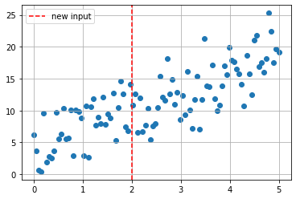
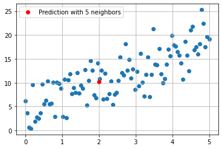
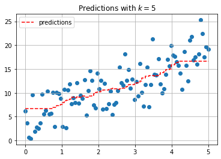
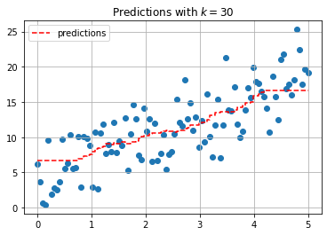

import numpy as np
import matplotlib.pyplot as plt
import pandas as pd
import seaborn as sns
---------------------------------------------------------------------------
ModuleNotFoundError Traceback (most recent call last)
Cell In[1], line 2
1 import numpy as np
----> 2 import matplotlib.pyplot as plt
3 import pandas as pd
4 import seaborn as sns
ModuleNotFoundError: No module named 'matplotlib'
x = np.linspace(0, 5, 100)
y = 3*x + 4 + np.random.normal(scale = 3, size = len(x))
df = pd.DataFrame({'x': x, 'y': y})
df.head()
| x | y | |
|---|---|---|
| 0 | 0.000000 | 6.155666 |
| 1 | 0.050505 | 3.685227 |
| 2 | 0.101010 | 0.668826 |
| 3 | 0.151515 | 0.410691 |
| 4 | 0.202020 | 9.582175 |
plt.scatter(x, y)
plt.axvline(2, color='red', linestyle = '--', label = 'new input')
plt.grid()
plt.legend();

KNearest Neighbors#
Predict the average of the \(k\) nearest neighbors. One way to think about “nearest” is euclidean distance. We can determine the distance between each data point and the new data point at \(x = 2\) with np.linalg.norm. This is a more general way of determining the euclidean distance between vectors.
df['distance from x = 2'] = np.linalg.norm(df[['x']] - 2, axis = 1)
df.head()
| x | y | distance from x = 2 | |
|---|---|---|---|
| 0 | 0.000000 | 6.155666 | 2.000000 |
| 1 | 0.050505 | 3.685227 | 1.949495 |
| 2 | 0.101010 | 0.668826 | 1.898990 |
| 3 | 0.151515 | 0.410691 | 1.848485 |
| 4 | 0.202020 | 9.582175 | 1.797980 |
df.nsmallest(5, 'distance from x = 2')
| x | y | distance from x = 2 | |
|---|---|---|---|
| 40 | 2.020202 | 10.817300 | 0.020202 |
| 39 | 1.969697 | 14.057748 | 0.030303 |
| 41 | 2.070707 | 12.671513 | 0.070707 |
| 38 | 1.919192 | 6.862097 | 0.080808 |
| 42 | 2.121212 | 6.627326 | 0.121212 |
df.nsmallest(5, 'distance from x = 2')['y'].mean()
10.20719679952342
plt.scatter(x, y)
plt.plot(2, 10.207196799, 'ro', label = 'Prediction with 5 neighbors')
plt.grid()
plt.legend();

Using sklearn#
The KNeighborsRegressor estimator can be used to build the KNN model.
from sklearn.neighbors import KNeighborsRegressor
knn = KNeighborsRegressor(n_neighbors=5)
knn.fit(x.reshape(-1, 1), y)
KNeighborsRegressor()In a Jupyter environment, please rerun this cell to show the HTML representation or trust the notebook.
On GitHub, the HTML representation is unable to render, please try loading this page with nbviewer.org.
KNeighborsRegressor()
predictions = knn.predict(x.reshape(-1, 1))
plt.scatter(x, y)
plt.step(x, predictions, '--r', label = 'predictions')
plt.grid()
plt.legend()
plt.title(r'Predictions with $k = 5$');

knn = KNeighborsRegressor(n_neighbors=30)
knn.fit(x.reshape(-1, 1), y)
predictions = knn.predict(x.reshape(-1, 1))
plt.scatter(x, y)
plt.step(x, predictions, '--r', label = 'predictions')
plt.grid()
plt.legend()
plt.title(r'Predictions with $k = 30$');

credit = pd.read_csv('data/Credit.csv', index_col=0)
credit.head()
| Income | Limit | Rating | Cards | Age | Education | Gender | Student | Married | Ethnicity | Balance | |
|---|---|---|---|---|---|---|---|---|---|---|---|
| 1 | 14.891 | 3606 | 283 | 2 | 34 | 11 | Male | No | Yes | Caucasian | 333 |
| 2 | 106.025 | 6645 | 483 | 3 | 82 | 15 | Female | Yes | Yes | Asian | 903 |
| 3 | 104.593 | 7075 | 514 | 4 | 71 | 11 | Male | No | No | Asian | 580 |
| 4 | 148.924 | 9504 | 681 | 3 | 36 | 11 | Female | No | No | Asian | 964 |
| 5 | 55.882 | 4897 | 357 | 2 | 68 | 16 | Male | No | Yes | Caucasian | 331 |
X = credit[['Income', 'Limit', 'Rating', 'Cards', 'Age']]
y = credit['Balance']
X.head()
| Income | Limit | Rating | Cards | Age | |
|---|---|---|---|---|---|
| 1 | 14.891 | 3606 | 283 | 2 | 34 |
| 2 | 106.025 | 6645 | 483 | 3 | 82 |
| 3 | 104.593 | 7075 | 514 | 4 | 71 |
| 4 | 148.924 | 9504 | 681 | 3 | 36 |
| 5 | 55.882 | 4897 | 357 | 2 | 68 |
Would a difference of 10 cards or 10 Rating points be more important?
StandardScaler#
One approach to scaling the data is to
credit = pd.read_csv(‘data/c